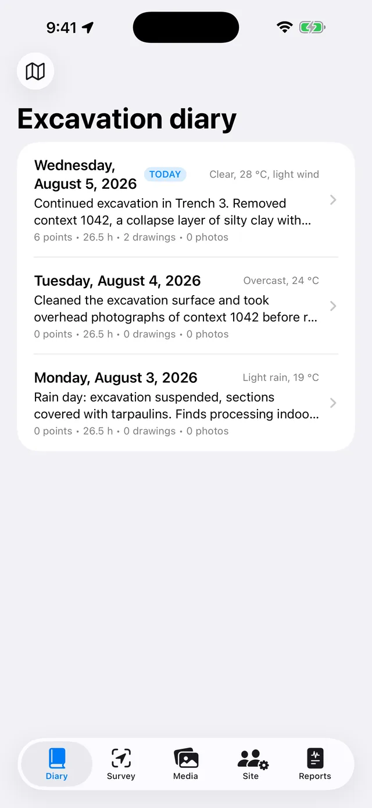
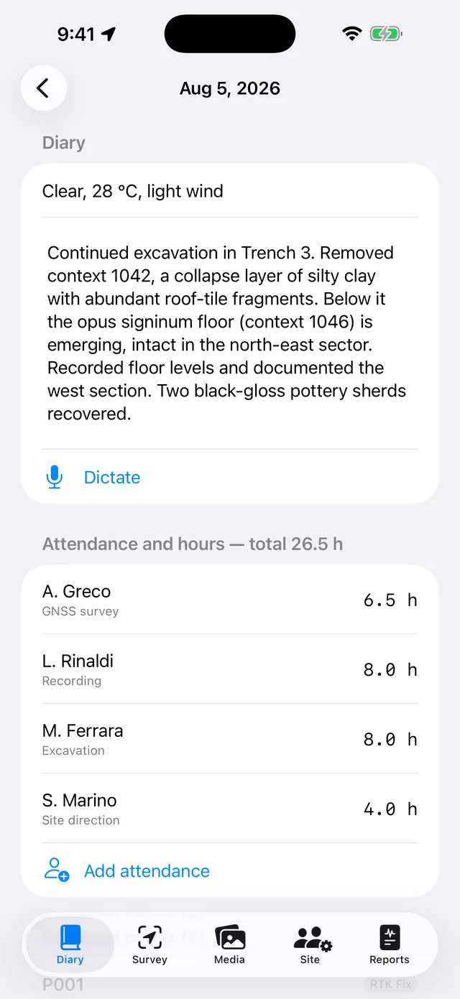
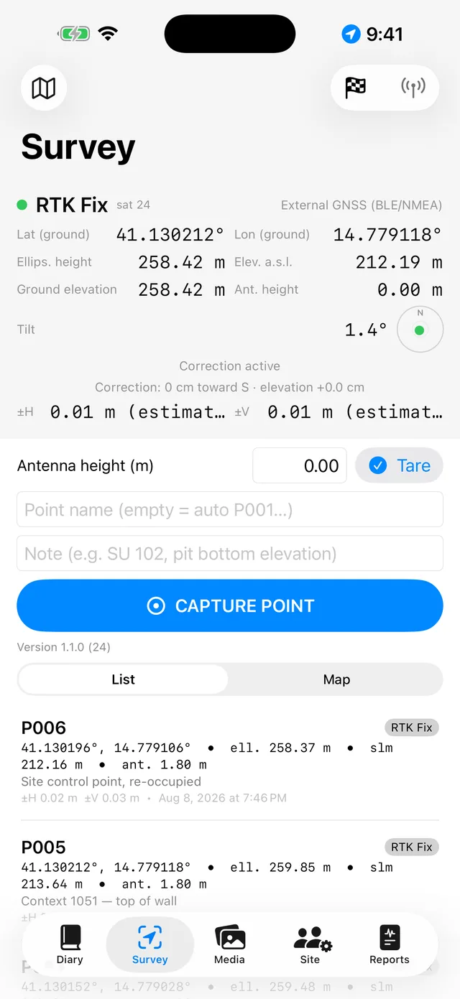
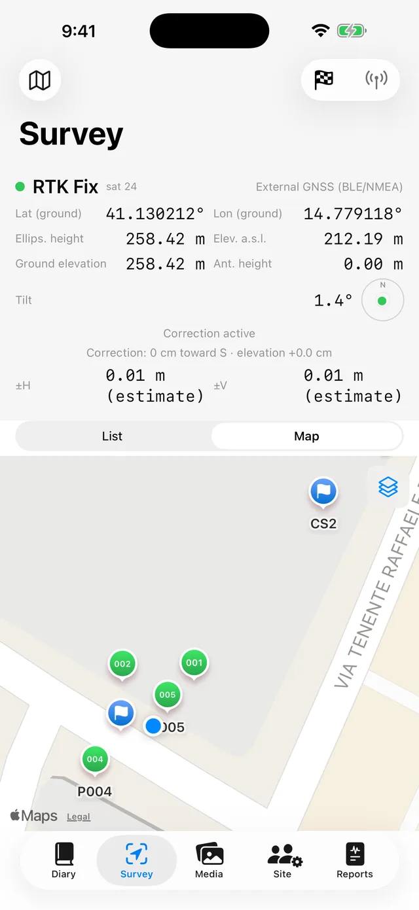
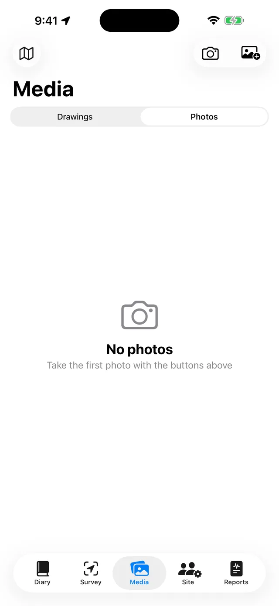
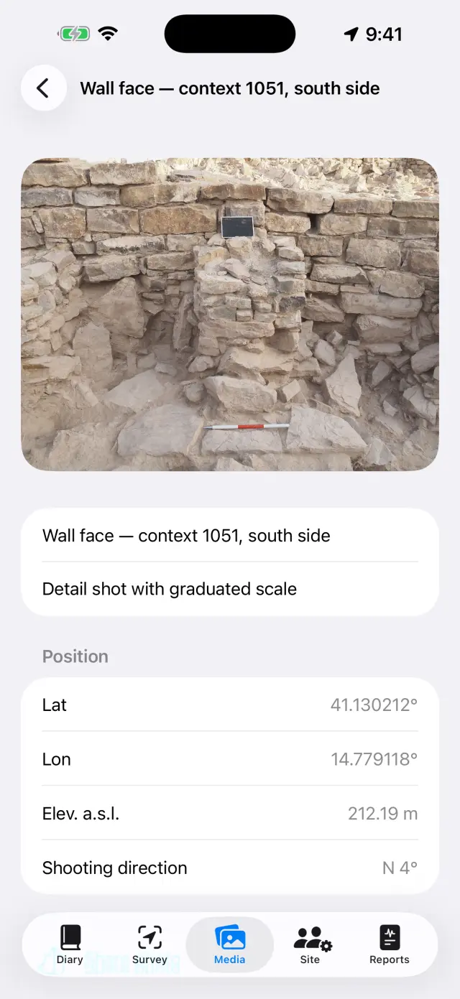
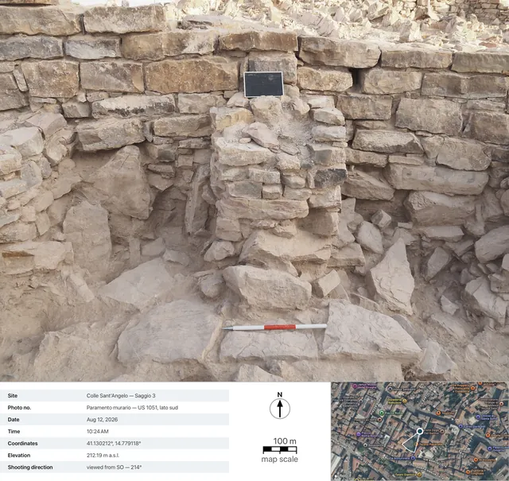
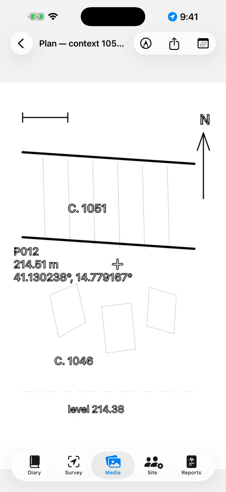
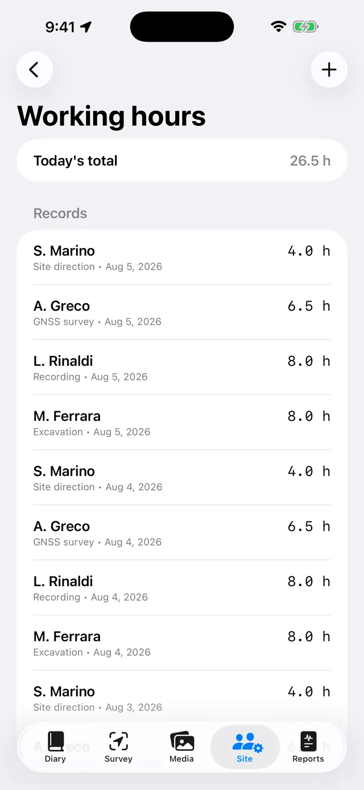
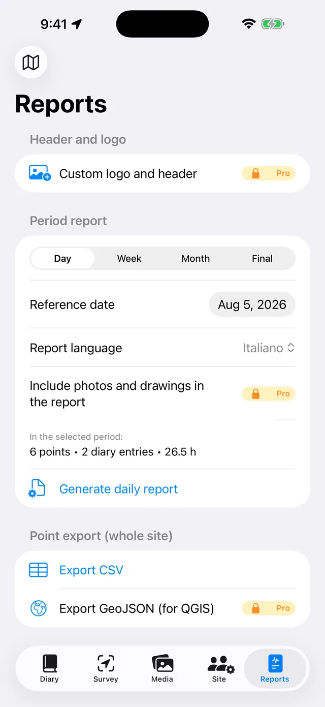

The digital excavation diary for iPhone and iPad. 100% offline: your data stays on your device.
📱 Android: download the app (APK, free). The first time, Android asks you to allow installing from Chrome or Files; after that the app offers updates by itself.
In a nutshell
One idea drives everything: every dig day is a page that
fills itself in. You record things wherever they belong — a GNSS point in
Survey, a photo in Media, hours in Site — and the day's page in the
Diary collects them all automatically. At the end of the week, or of
the excavation, reports build themselves from the pages.
A typical day
MorningOpen the day's page, note the weather and diary (or speak it with Dictate)
CrewIn Site, record who is present and their hours
SurveyCapture GNSS points; check a benchmark first if you use RTK
PhotosShoot from Media: coordinates are attached automatically
DrawingsTrace the section or plan over a photo (digital tracing sheet)
SUUpdate the records of the SUs you dug and their relationships: SU
FindsWith the boxes in front of you, record what came out: Site → Finds
EveningFrom Reports, generate the daily report: a PDF ready to send
First steps
On first launch you'll find a sample site. To create your own, tap the site
name at the top (the 🗺 icon) → New site… and give it a
name (e.g. "Colle Sant'Angelo — Trench 3").
The active site's name is always visible at the top: every tab shows that
site's data. Tap the name again to switch site: the list is under the
“Your sites” heading, and Rename site… lets you fix a name without
losing anything.
Grant permissions when asked: location (for points),
camera (for photos), microphone (for dictation),
Bluetooth (only if you use an external receiver).
The six tabs
📓 Diary
Tap a day to open its page: diary, weather, crew, points, photos and
drawings of that day are already there.
Write the diary or tap Dictate and speak: transcription happens
on the device and works with no network.
The weather can be typed by hand (e.g. "Clear, 28 °C, light wind") or fetched
with Fetch, which asks the Norwegian meteorological service for the
current conditions. It needs a network and only works on today's page:
yesterday's weather can no longer be recovered. A second tap in the afternoon
adds another measurement. Anything you type by hand always wins.
When fetching, only the area's position leaves the device, rounded to about
11 metres, and in reports the line appears in the report's language.

The list of dig days

A day's page
🧱 SU — stratigraphic unit records
One record for each stratigraphic unit, with the relationships between SUs
recorded as links: this is where the SU records of the documentation and the
Harris matrix come from.
In the SU tab tap +: the app suggests the next number
(you can change it) and asks for type and definition. The number is unique
within the site; later you change it with Change, and the boxes with
that provenance follow it.
The record gathers identification (type, subtype, definition, area or
sector, grid square, trench, excavation method: manual, mechanical or
Unexcavated for SUs recorded but not excavated), dimensions and
elevations (length, width, thickness, minimum and maximum elevation),
description (colour, Munsell, sediment type, compaction, inclusions, deposit
structure, and three yes/no questions: Sealed,
Surface weathering, Bioturbation), finds present,
interpretation (activity, phase, dating, dating evidence), opening and closing
dates and the person in charge. It saves itself as you write. At the bottom you
also find the photos and survey points that name the SU in their title, name or
note (“SU 102 from north”).
Next to definition, colour, sediment type, compaction, inclusions, finds
present, interpretation, activity and dating there is the
thesaurus button (the booklet): choose from the standard
vocabulary or from your own terms, and the record stays consistent among
everyone digging. For inclusions and finds you can pick more than one. If the
word you are looking for isn't there, the sheet offers to add it. Your terms
apply to all sites and are managed from Thesaurus, in the ⋯ menu of
the SU tab. There you also choose the Site chronology:
Mediterranean or Arabian Gulf (DCT), with the periods of
the DCT form (Hafit, Umm an-Nar, Wadi Suq…) offered for dating.
Add relationship: choose the relationship (covers, cuts, fills,
abuts, bonded with, same as, and their inverses) and type the number of the
other SU. The relationship is recorded only once and appears reversed in the
other record: if 101 covers 102, in 102 you read “covered by 101”. If the other
SU doesn't have a record yet, an empty one is created. A relationship that
contradicts the sequence already recorded is refused, with the explanation.
The finds section shows the boxes whose provenance names the SU (“SU 102”,
“MSU 12”): there is nothing to link by hand.
Add find opens the find record with the provenance already filled
in.
From the ⋯ menu, Harris matrix draws the sequence from the
relationships: the most recent SU at the top, SUs that are the same or bonded in
a single box, cuts dashed, masonry units on a grey background. Pinch to zoom,
and share it as an image.
Printed record: inside a record, the share button at the
top offers Record as PDF and Record as DOCX (Word); from
the ⋯ menu of the list, All records as PDF and
All records as DOCX (Word) put all the SUs of the site in a single
file, one per page. It is the archive form: tables with the fields,
relationships, finds, logos and report header, in the language chosen for
reports.
Survey123 / DCT: Export CSV (DCT SU form) writes
a CSV with the same columns and the same codes as the Survey123 form of the DCT
SU record, ready to hand over or upload. Import CSV (DCT SU form)…
does the reverse: it reads a CSV exported from Survey123 (or from the app) and
creates the records with their relationships. SUs that already have a record in
the site stay as they were, and at the end the app tells you how many records
and relationships it added. If the file contains the Gulf periods, the site
chronology switches to Arabian Gulf (DCT).
📍 Survey
The panel at the top shows the live position: coordinates, elevations,
accuracy and fix type (GPS / RTK Float / RTK Fix).
If you use a pole, set the Antenna height (m): the point's
elevation is reduced to the ground automatically.
Tap Capture point. Names are sequential (P001, P002…), but you
can type your own (e.g. "SU 102 — pit bottom") and add a note.
Switch between List and Map to see points in place;
from the map you can enable a cadastre or another WMS service.
Benchmarks (🏁) live in their own section: import them from CSV or create
them, then open Live check and watch the ΔN/ΔE/ΔZ residuals with the
pole tip on the nail, before you start surveying.
Under Level books you'll find the field book for the optical
level: stations, backsights and foresights, elevations calculated from a
starting benchmark, with a closure check. Levelled points enter the site with
their elevation, just like GNSS ones.
On devices with a LiDAR scanner (iPhone Pro from the 12
on, iPad Pro) 3D Measurement appears:
pan slowly until the surface has been reconstructed, then tap the two points
you want and read off distance, horizontal distance and height difference. With
Anchor to benchmark you pick a benchmark of known elevation and tap
its point on the ground: from then on every measurement also carries the
a.s.l. elevation of both ends. Fix keeps the measurement in the
scene, Discard measurement throws it away,
Write into the diary turns it into a text you correct before
confirming. It is an optical measurement, and the app says so by writing
“LiDAR ±cm”: it is there for a height difference or a length taken quickly
on the spot, and it replaces neither the GNSS nor the level. On devices without
the scanner the button isn't there at all.
Below the panel sit the NMEA recordings: the raw stream from the
external receiver is written to file by itself —
recording starts when you switch the antenna on and closes when you switch it
off, with nothing for you to remember. It is there to re-read a doubtful day,
or to hand the raw data to whoever post-processes it. Files can be shared and
deleted, except the one being recorded right now; the list opens with the
receiver off too, so yesterday's files stay within reach.

The Survey GNSS panel

Points and benchmarks on the map
Every point stores both elevations:
ellipsoidal and orthometric (a.s.l.). With the phone's internal GPS the
orthometric height may be unavailable: that needs an external receiver (see
below).
📷 Media
Shoot with the camera button or import from the photo library.
Photos are named sequentially (F001, F002…) and are geotagged with the
latest available GNSS position.
When you shoot, the app also records the shooting direction
from the compass: the photo's detail view and reports show “viewed from
SO — 214°”, and for shots taken straight down (plan view, the bottom of an SU)
a nadir caption with the direction of the top edge. If the compass is
disturbed, the app tells you.
Tap a photo to set its title and notes (e.g. "SU 102 from north").
Share photo record generates the
photo documentation record: the photo with the shot's data
below it (site, number, date and time, coordinates, elevation, direction), a
satellite view with a pin and the shooting cone, the map's scale bar and the
north arrow. The map needs a network: without one, the record still comes
out, with a larger data panel.
Virtual scale lays on the photo the references you didn't have
in the field. First Calibrate photo: you tap the two ends of a
distance you know — one division of the ruler, the side of a brick — and
declare it in centimetres. Then you place what you need:
Scale bar 5 cm, Scale bar 10 cm or
Scale bar 20 cm, Ranging rod 50 cm,
Ranging rod 1 m or Ranging rod 2 m,
Square 10×10 cm, Reference cross and
North arrow. Every element has its own rendering
(Flat bar, Real rod, Tick ruler), size,
thickness and rotation; to move one, press and hold it and
drag — that way the pinch to zoom doesn't shift it by mistake.
Add measurement measures any distance on the photo with two
taps. The number is never saved: if you recalibrate, all the labels rewrite
themselves. On photos taken straight down with the app the north arrow starts
out already oriented on the recorded azimuth, and the report says so; if you
turn it yourself, the caption switches to “declared”.
Share with scale gives you a copy of the photo with what you have
laid on it —
Share photo stays the bare original, with its EXIF.
Batch process (the menu at the top
of Media) takes a group of photos from the library and passes them
all through count and measure, one after another: each photo becomes a site
photo with the date it was shot, and each will have its own new finds
record to confirm. The screen stays on for the whole batch. If you
leave or interrupt it, the photos already done stay as drafts and
Resume the batch starts again from where it was. At the end the
review hands you the records one by one: correct provenance, class and
quantity, and confirm.

The photo gallery

A photo's detail view: coordinates, elevation and shooting direction

The exported record: the shot's data, the satellite view with the shooting cone, the map's scale bar and the north arrow
🧮 Count and measure (in Media)
The tray of sherds photographed from above, and the app counting and
measuring them by itself. It lives on the photo of a find: you
open it from its record and tap Count and measure.
The scale first. The app looks for the scale bar in the
photo by itself: if it finds one it tells you how many squares it read, you
declare how much one square measures (1, 2, 5 or 10 cm) and tap
Use the proposal. If it doesn't find one, you tap the two ends of a
known distance by hand. You can also choose Do not calibrate: then
it only counts, and the app writes that the measurements are not there — it
doesn't invent them.
The model outlines every shape in the photo: that can take a few tens of
seconds. What appears is a proposal, not a result: one tap
excludes a shape, another brings it back. Merge fuses into one the
shapes that are the same piece broken in two; Limit to an area lets
you draw the tray's fence with your finger, and the search stays inside it;
Fine pass goes over again only where it had found nothing. The
suspects — the shapes that look like background, the sheet,
the shadow — are grouped and excluded in one go.
With Material of the shape you tap a piece and say what it is;
Material for all gives it to all of them at once, or only to those
left without. Propose the material asks the model on the device to
guess it: it is a proposal to be checked, and your choice always wins.
Next opens the confirmation sheet with the text already written:
the count, the measurements (longer side × shorter side, in that order), and
the honest declarations — “of which N without a reliable measurement” when a
shape won't let itself be measured. If there is a label in the
photo, the app tries to read it and always tells you: either
“Label read: …”, or “No readable text in the photo”.
The switches only appear where there is an empty slot to fill:
Use the count as quantity, Use as code,
Use as provenance. What you have already written is never
overwritten, and the notes grow: a second round goes after the
first, not in its place. The text can be edited: what goes into the notes is
what you read there.
Afterwards, in the photo's detail view, Numbers on shapes shows
or hides the little numbers — and the way you see them there is the way they
come out in shares and in reports too. Tap a shape to know which one it is:
“7: 4.2×2.8 cm”. If the photo is not calibrated the label says so,
instead of giving a number.
The measurement holds in the plane of the two
points you calibrated: the photo must be taken straight down, with the tray
parallel to the sensor. The declared reference is ±2 mm on well-framed pieces;
a fragment standing on end or on the edge of the photo is outside that
bargain.
✏️ Drawings (in Media)
Create a new sheet and pick a site photo as its background: that's your
digital tracing sheet. A drawing can continue across several days. You can
also leave the photo out: a blank sheet draws just as well.
Trace layers, cuts and stones with a finger or Apple Pencil.
Pinch to zoom (up to 6×, two-finger double-tap to return to
1×). If the photo covers your strokes, choose Background opacity…
from the camera menu and take it wherever you need, from 5% to 100%: it fades
the photo, not the drawing. The choice stays with the sheet and holds in PDF,
DOCX, PNG and Export with legend too.
Everything else sits under Tools (the spanner in the toolbar),
which is the index of the seven modes: Text box, Trace, Photo scale,
Point with elevation, Hatch, Line style and
Virtual scale. Only
one is held at a time: the tick says which, and while it is on
your finger doesn't draw but drives that tool — tap the ticked entry again to
go back to drawing. The three entries that work on the image (trace, scale,
point with elevation) only appear if a background photo is there.
With Text box you place the labels (e.g. "SU 1002"): they can be
moved, resized with a pinch, and come with four fonts to choose from.
Trace recognises the outline of the
object you tap (a stone, the edge of a layer) and turns it into a stroke:
colour, thickness and line style can be changed without leaving the mode, and
the outlines come out smooth instead of stepped. Everything happens on the
device, with no network.
Inside tracing, Trace everything
goes over the whole photo on its own. In the start sheet you decide the
styling — Outlines only, or a hatch and perhaps a Colour wash — and press Start: the bar says how far along it is, and
it takes some tens of seconds. What appears is a preview, not
the drawing: a tap inside a shape excludes it, another brings it back (among
overlapping shapes the smallest one under your finger wins), Fine pass goes over again only where it had found nothing, and
Apply puts what is left onto the drawing. Until you apply, the sheet
is untouched.
With the Photo scale tool (ruler) you tap the two ends of a
known measurement — a length of the ranging pole — and enter the true distance:
the photo picks up the scale, and from then on exports speak in metres.
With Point with elevation you place the crosshair of a GNSS
point from the site (or a hand-entered point) on the photo: name, elevation
and coordinates appear in a draggable label with a leader line. Pinch on the
selected label to shrink or enlarge it, when the values cover the drawing.
The Hatch fills shapes: you tap inside a closed
shape and it fills. There are the ten conventional hatches —
Masonry / stone, Brick, Mortar / plaster,
Clay, Silt, Sand, Gravel,
Charcoal / ash, Bedrock, Wood — and the
Colour wash (a colour with its own opacity), on their own or
together. If one shape sits inside another the smallest under your finger wins;
Remove fill clears it. No photo is needed: filling works on the
shapes you have drawn, so it works on a blank sheet too.
The Line style dresses a stroke that is already
drawn: you tap it and choose between Continuous,
Dashed, Dotted and Dash-dot, adjusting the
thickness. Draw with this style makes the strokes that follow come
out dressed already; Remove style puts the line back to solid. It is
not a screen effect: the dashes are real segments, and they stay that way in
PDF, DOCX, PNG, SVG and DXF.
The Virtual scale brings onto the sheet the same references as
the photos have: scale bar, ranging rod, square, cross, north arrow and
measurements with two taps. The metric types ask the sheet to have a scale,
that is the Photo scale: with no known distance the app explains
instead of drawing. In SVG and DXF these elements
come out as vectors, on their own layer, and the measurement
read with the GIS ruler matches the label.
Export with legend: the image
comes out with a white band underneath — a metric scale bar (if the scale is
set), a north arrow for photos taken straight down, “viewed from” for frontal
ones.
Export vector: SVG for the
drawing, or DXF for the GIS. With at least two points with
elevation and coordinates on a photo taken straight down, the DXF comes out
georeferenced in UTM and positions itself in QGIS
automatically; with only the scale set it comes out in local metres; with
neither, the app says so and won't produce a file with no units. The SVG is the
exception on opacity: it embeds the original photo just as it is, so a faded
background comes out there at full strength.
When you're done, hide the photo: the clean drawing stays, ready for the
report.

The digital tracing sheet
👷 Site
Record the day's attendance: each person's name, role and hours.
Keep the equipment inventory and who each item is assigned to.
Under Finds sits the register of what comes out of the
excavation, with the number of rows already recorded written under the
name.

Crew and hours
📦 Finds (in Site)
The real moment isn't the camera: it is sitting down at the end of the day
with the boxes in front of you and working through them one after another,
tired and with dirty hands. Everything here is made for that moment.
Site → Finds → +. The record opens with
today's date already in it and with the last provenance used:
from the second row on, recording is almost only tapping. The field suggests
the provenances already used on that site.
The fields are in the order you really fill them in:
Provenance (e.g. “SU 102”), Class, Quantity
with its Unit (fragments, pieces, bags, boxes, grams), the code of
the box or the bag, Status (To be washed,
Washed, Marked, Delivered), notes and
date.
Eleven classes are offered — Pottery, Brick,
Animal bone, Human bone, Metal,
Glass, Lithics, Mortar and plaster,
Wood, Samples, Other — but you can write one
of your own (“Painted plaster”): it will stay that word in every language,
because the app only translates the entries it offers itself.
The quantity can be left empty: a row can say “this stuff was there”
without counting it, and in the exports that cell stays empty, never zero.
A record's photos are taken with Take Photo, picked with
From library or with From the site, which fishes among
the photos already in the gallery that don't have a record yet. They are the
same photos as in Media: deleting a find does not
delete its photos, which only lose the link.
On the day's page the Finds section appears only if you recorded
some that day. Write into the diary offers the summary line, grouped
by provenance and with the notes in full: you correct it and add it to the end
of the diary. Pressed twice it writes twice — the diary never rewrites
itself.
📄 Reports
Pick the type: daily,
weekly, monthly or final
with full appendices.
Pick the report language from seventeen, independent of the
app's language: the report can come out in German even if you use the app in
English.
Generate the PDF, or export DOCX with your logos and photos, CSV of the points, GeoJSON for QGIS.
In Header and logos type the header and choose one or more logos
(Choose company logo, then Add another logo): they appear
at the top of every report and of the SU records, in the order of the list,
which you change with the Move up arrows.
At the bottom sits Finds export (whole site):
Export Finds CSV for the spreadsheet, and
Export Finds HTML for a table with thumbnails that opens in any
browser with no network. Headings, classes, units and statuses come out in the
language chosen for the report; what you wrote yourself stays as you wrote it.
In the final report the finds have their own appendix, by provenance.
SUs go into the reports: those opened and closed in the period in the
daily, weekly and monthly reports; the final report has the appendix with all
the records, the Harris matrix and a summary table of the SUs (number, type,
definition, dating, covers, covered by).
With photos in reports switched on, you can choose Photo records instead of photos: every photo enters the
PDF and DOCX as a full documentation record with data and map, in the
report's language.

Report generation
External GNSS receiver and NTRIP
With an external receiver (centimetre-grade antenna) the app reaches RTK
accuracy. The internal GPS always remains available as a fallback.
Turn the receiver on and enable Bluetooth on the phone.
In Survey, choose the position source: External GNSS
(BLE/NMEA) and pick your receiver from the
list. MFi receivers and receivers that stream NMEA over the network are
supported too.
For RTK corrections configure NTRIP: caster address, port,
mountpoint, username and password (stored in the device keychain). The app
sends your position to the caster and receives corrections.
Wait for RTK Fix: centimetre accuracy. Check against a
benchmark before you start.
Where the phone has no signal, there is also the road
without internet: a base planted on a known point and a rover
swapping corrections over LoRa radio, with no caster and no
SIM (DFRobot RTK kit with an ESP32 bridge). Nothing changes for the app — it
receives already-corrected NMEA from the receiver — and building the bridge is
documented separately, in its own README: this stays a guide to the app, not a
firmware manual.
Backup and exchange
From the site menu tap Export site (.zip): everything is inside
— diary, points, photos, drawings, hours, benchmarks, finds and SU records.
Keep the ZIP wherever you like (Files, Drive, e-mail…). It is your backup:
the app has no cloud, by design.
Import site (.zip)… recreates the site on another device, even
between iPhone and Android. Importing never overwrites and never merges: it
always creates a new site next to yours, with “(imported)” in the name if you
already have one with the same name.
⚠️ Delete site… removes the site with everything in
it and is irreversible: export a ZIP first if in doubt.
Free
Giornale di Scavo is free and complete: every feature
described in this guide is included, with no subscriptions, no in-app purchases
and no watermark, and with unlimited sites.
Troubleshooting
The Bluetooth receiver doesn't appear or won't connect
Check, in order:
the receiver is on and not already connected to another app or phone;
system Bluetooth is on and the app has the Bluetooth permission
(Settings → Giornale di Scavo);
the source chosen in Survey is External GNSS (BLE/NMEA);
power-cycle the receiver, then search again.
I never reach RTK Fix
An active NTRIP connection is required: check caster, mountpoint and
credentials.
Check the phone's data coverage: corrections travel over the internet.
Open sky matters: dense trees and nearby walls degrade the signal. In poor
conditions you may stay in RTK Float (decimetre level).
Choose a nearby mountpoint (< 30–40 km) or a VRS network.
NTRIP won't connect
Verify address and port (often 2101) and that the mountpoint exists: most
casters publish the list (sourcetable).
Wrong username or password gives a 401/403 error: re-check the credentials.
Some networks require your position (GGA): the app sends it automatically,
but the receiver needs an initial fix first.
The elevation a.s.l. is empty or zero
Phone GPS provides only the ellipsoidal height. The orthometric height
(a.s.l.) comes from the GGA sentence of an external receiver. Without one,
points still store the ellipsoidal height.
Dictation doesn't work
Check the microphone and speech recognition permissions in Settings.
Transcription is on-device: the first time, the system may need to download
the language model (network needed once, then it works offline).
Speak in short sentences; the text is appended to the diary.
The cadastral map (WMS) doesn't show
The app is offline, but WMS layers are web services: they need a connection
and a working service. The Italian cadastre is preconfigured; for other
countries enter your national service's WMS endpoint (it must support
EPSG:3857). Out of data coverage, the base map and your points remain
visible.
Photos have no coordinates
A photo takes the position from the latest GNSS fix: open Survey first and
wait for a position, then shoot. If the location permission is denied, photos
are saved without coordinates.
Photos or the logo are missing from a report
Check that Include photos and drawings in the report is on and
that at least one logo is chosen in Header and logos: both apply to
the PDF and to the DOCX, and the logos also to the printed SU records.
I deleted a site by mistake
Deletion is final: the data cannot be recovered (there is no cloud). If you
exported a ZIP earlier, import it to restore the site as of that date. Tip:
export a ZIP at the end of each day.
“Fetch” is greyed out, or says “Weather unavailable”
if the button is greyed out you are on a past day's page: weather can only
be fetched on today's;
if you see “Weather unavailable” there is no network, or the site has no
GNSS point yet to take the position from — record a point and try again.
The photo record comes out without a map
The satellite view comes from Apple and needs a network: the app waits up
to 15 seconds, then generates the record without a map (the data doesn't wait
for the network). On slow site networks it can take the full wait: try again
under Wi-Fi. Without coordinates on the photo, there is no map by
definition.
“Trace everything” finds nothing, or finds too much
the pass works on the background photo: with no photo the command isn't
there, and while it reads “Preparing the photo…” the model isn't ready yet —
wait for it;
if the shapes are too few, press Fine pass: it goes over again
with a denser grid, only where the first pass had seen nothing, and adds what
it finds without bringing back what you had excluded;
if they are too many, don't apply everything: in the preview tap the extra
shapes to exclude them one by one, then Apply. What you exclude
never reaches the drawing;
flat photos — little contrast, midday light, ground all the same colour —
give few outlines, and there is no way round it: there the single-tap trace
does better, because it knows where you are looking;
if you are left with a mass of tiny shapes, try again with Outlines only: they read better, and the hatch can always be laid on afterwards,
by hand.
The stroke won't take a style
the tap looks for the nearest line within a fingertip's radius: if the
stroke is thin or the area crowded, zoom in and tap more
precisely, right on the ink;
only strokes can be dressed. Fills, text boxes and the
crosshairs of points with elevation are not lines, and don't answer under your
finger;
if “This stroke cannot be restyled” appears, among the lines the tap
gathered there is one that is not a line: the dot left by a still tap, or a
stroke that arrived broken from an imported archive. Delete the dot and try
again, or tap the line at a point far from it. A dot on its own simply cannot
be dressed: there is no way to make a dashed line out of a point;
if between the tap and Apply you undid something or drew
something else, the selection releases itself so as not to dress the wrong
stroke: tap the line again and retry.
The hatch doesn't appear when I tap inside the shape
the shape must be closed, and closed by a single
stroke: start and come back almost to the same point without lifting
your finger (a few millimetres of gap are tolerated). Two lines that touch at
their ends stay two open lines, and flooding a sheet past an edge nobody drew
would be worse than not filling it at all;
the outlines produced by Trace are closed by construction: those
always fill;
if the shapes sit one inside another, the tap takes the
smallest one containing it — to fill the large one, tap at a
point that lies outside the small ones;
did you tap inside the shape, and not on its edge? The target is the area,
not the line.
The DXF is rejected, or opens “near the origin” in the GIS
a georeferenced DXF needs a photo taken straight down
with the app's camera and at least two points with elevation and
coordinates, well spread out on the photo;
with only the ranging pole's scale, the DXF comes out in local
metres: that's correct, but the GIS shows it near the origin — the
app tells you beforehand;
without scale or points, the export is refused: a DXF with no units
wouldn't be meaningfully readable by any GIS.
I faded the background, but the SVG comes out with the photo at full strength
That is how it is and how it stays: the SVG carries the original
file of the photo inside it, not a faded copy of it, and lightening it
would mean re-compressing it — that is, making it worse for everyone who opens
the SVG to work on it. Background opacity… holds in the editor, in
the PDF, in the DOCX, in the PNG and in Export with legend. If you
need the vector without the photo, choose SVG — drawing only; if you
need the faded photo, export to PNG or go through the report.
The north arrow doesn't appear in the export with legend
The arrow only appears for photos taken straight down with the
app's camera, which records the azimuth at the moment of the shot.
Frontal photos get the “viewed from …” caption instead (a north arrow on the
plane of a front elevation would be a geometric lie); photos imported from
the library get neither, because the shooting data is missing.
“Count and measure” doesn't appear on the photo
The command lives only on the photos of a find — that is
where outlining fragments makes sense — and it opens from the photo's detail
view, not from the record, which only shows the thumbnails.
The scale bar isn't found
what is recognised are the checkered bars — black/white,
black/yellow, red/white — and block rulers; colour charts and plain rulers,
with no squares, are not recognised on principle;
the bar must take up at least a tenth of the photo's long side and be
wholly inside the frame: cut off by the edge, it can't be read;
how many squares it read is for the app to say, but how much one
square measures is for you to say: it can't be deduced from the image,
and guessing it would mean lying about the scale;
if it doesn't find one, you tap the two ends of a known distance by hand.
With Do not calibrate it only counts, and the app declares that the
measurements are not there.
The count doesn't match the real tray
what you see after the pass is a proposal: tap to exclude the ruler, the
label, the hard shadows and everything that isn't a find, until the number
matches the one you counted by hand;
if a fragment was read as two pieces, tap the two shapes and
Merge: it becomes one single shape, with one single number;
if the pass looks outside the tray as well, draw the fence with
Limit to an area: the search stays inside it;
if pieces are missing, Fine pass goes over again only where it
had found nothing, without bringing back what you had excluded;
the number that ends up in the notes is the one you
confirmed, not the one the model had proposed.
The label isn't read, or it proposes the wrong thing
the outcome is always declared: either “Label read: …”, or “No readable
text in the photo” — silence isn't an option;
automatic reading gets things wrong, above all on handwriting: that is why
the sheet's text is corrected before you confirm;
Use as code and Use as provenance appear only if
those fields are empty: what you have already written is not touched;
two different labels in the same photo make the datum ambiguous, and then
the app proposes nothing: you still see the text it read, the choice stays
yours.
The batch stopped, or some photos didn't come in
library photos that are in iCloud and not yet downloaded won't load: open
them once in the Photos app, then Retry the errors;
if you left the app or interrupted it, the photos already done stay as
drafts and Resume the batch starts again from where it was, without
redoing what was done;
imported photos take the date they were shot, not today's:
if you can't see them, you are on the wrong day — switch to All or
go to their day.
The virtual scale bar doesn't match the real ruler
The scale holds in the plane of the two points you
calibrated: if the photo is taken at an angle, an element laid further away or
nearer than that plane cannot match. Shoot straight down, with the plane
parallel to the sensor, and calibrate on a distance that lies in that plane. If
the value you declared was wrong, Recalibrate: every measurement
already laid rewrites itself, because the number is never saved.
“3D Measurement” isn't there, or the measurement is off
the LiDAR scanner is needed: on the iPhones and iPads that
don't have one the button doesn't exist at all, instead of sitting there
greyed out with no explanation;
if “Surface not yet complete” appears, the reconstruction isn't finished:
move slowly and frame it from several angles before tapping the points;
full sun and shiny surfaces — marble, tiles, painted plaster — degrade the
reading: it stays an optical measurement, declared “LiDAR ±cm”;
if the session is interrupted (a phone call, the app put aside) any anchor
to a benchmark lapses, and the app says so: better to redo it
than to keep elevations that are no longer true.